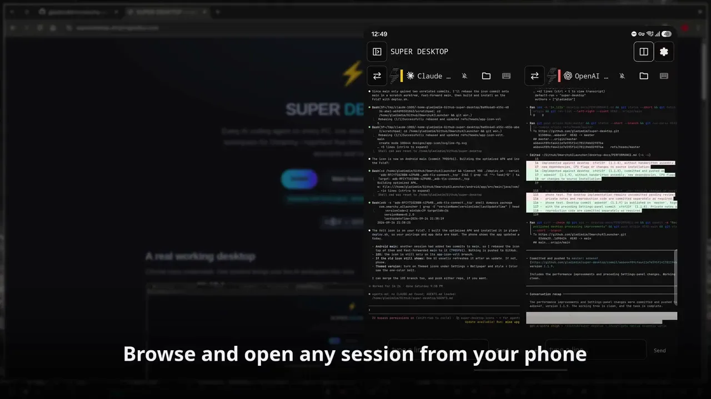

Linux overlay · Android app on Google Play · GPL-3.0
SUPER DESKTOP
Every AI agent. One shortcut away.
- Press SUPER SHIFT Q and your coding agents slide in as live terminal cards with sticky notes. Press it again and they hide but keep running.
- Claude Code, Codex, OpenCode, Grok and more, each in its own card. A Files button previews images, PDFs and Markdown the agent mentions.
- Follows your Omarchy theme. Open another PC's agents from yours, or all of them from your phone, over your own network. No accounts.
- A command line and an MCP server let agents drive it too.
curl -fsSL https://raw.githubusercontent.com/gladimdim/super-desktop/master/install.sh | bash